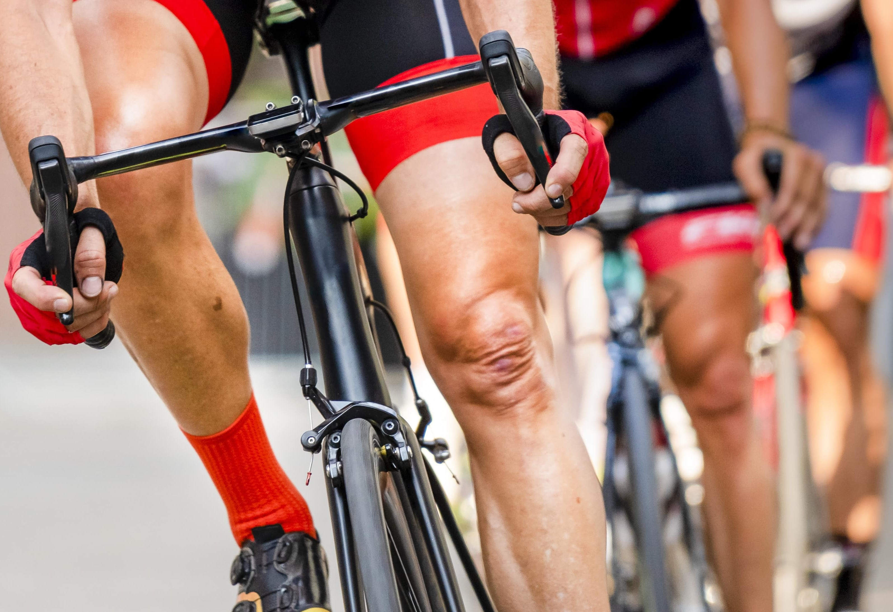
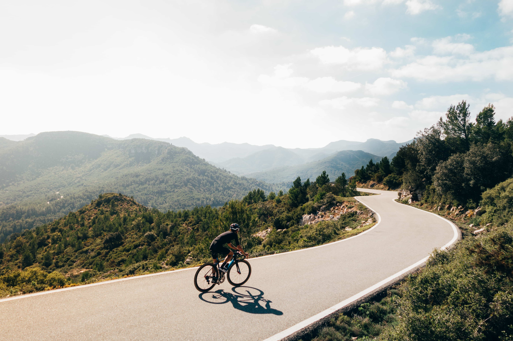

Club rides take place in the evenings from the first week in April until the end of September. The Sunday ride takes place throughout the year. It would be nice to say that the rides happen in all weathers, but this is Wales and we're not that dumb. For the most up to date information, check us out on Facebook. The rides leave at the times shown below, so be there earlier and ready to go.
|
Tuesday 18.15 |
Thursday 18.15 |
Sunday 09.00 |
|---|---|---|
Main Club Ride/ Women only Ride |
Beginner Ride |
Social Ride |
|  |  |

|
The following is a guide only. It can be used to choose which group of riders you should aim for and what would be expected of you. Remember that average speeds are difficult to pin down and can be affected by the nature of the terrain and the weather conditions encountered. The distances mentioned aren't necessarily what you will encounter on the club rides, but they are what you should be capable of doing.
Our regular club rides leave from the Tommy Cooper statue in the centre of Caerphilly (CF83 1JL). If required, a car park is immediately adjacent. The rides leave on time.